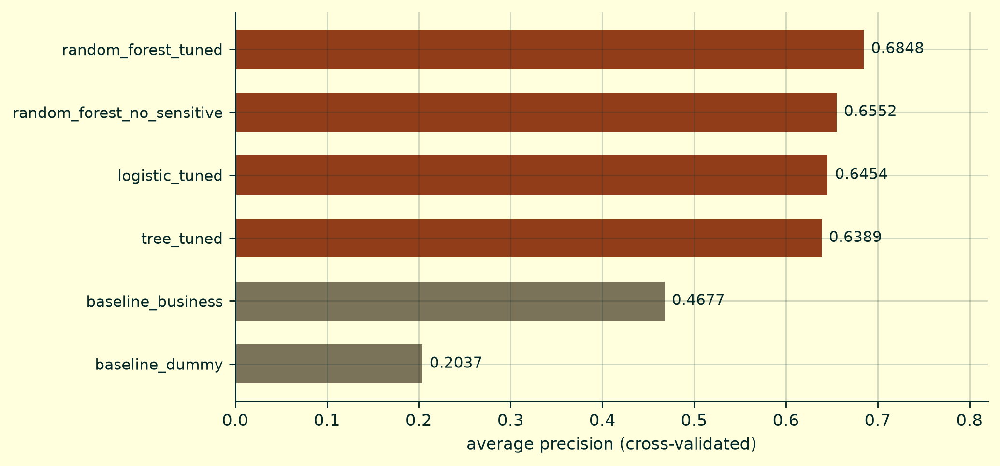
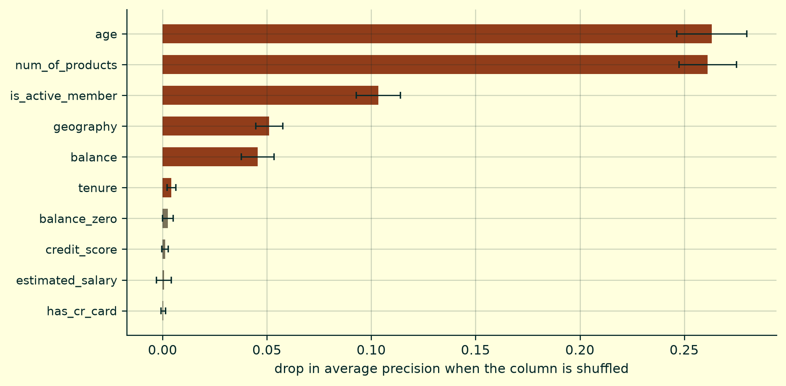
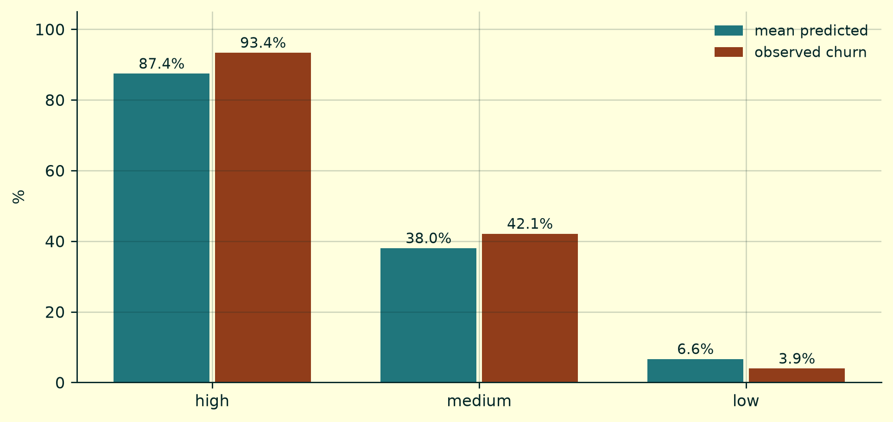
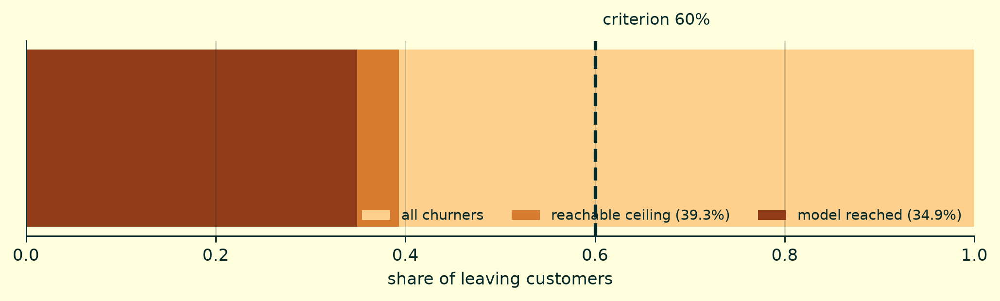
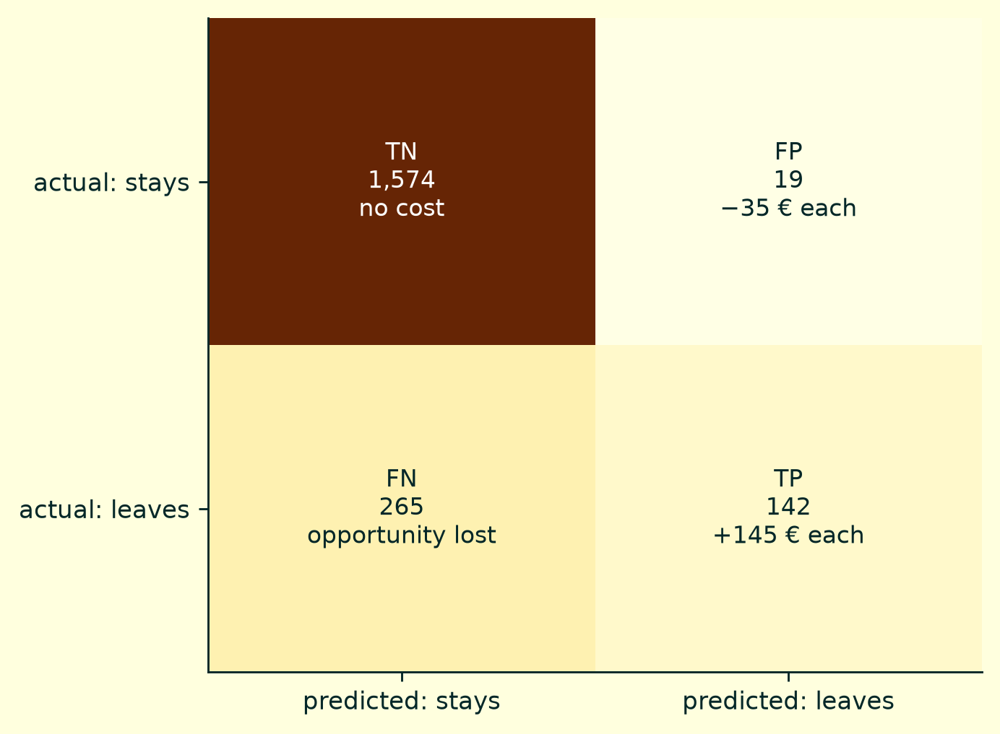

What the model had to beat
baseline_dummy scores 0.2037 — the base rate, what random guessing gets. That is an easy rival and it proves nothing.
baseline_business is the real one: contact customers who are inactive and over 50. If a random forest tuned over two days does not clearly beat that, the project does not justify its cost. Almost no churn project submits itself to this test.
Why KNN and SVM were never tried
KNN classifies by proximity, and proximity has no meaning across these columns. It would mix euros of balance, years of age and a country into a single distance. That can be normalised, but the resulting number corresponds to nothing.
SVM has a more concrete problem: it does not produce probabilities natively. It returns a side of a boundary. This system does not need a yes or no — it needs to rank the portfolio to allocate 800 calls. Without probability there is no ranking.
Neither was rejected on performance. They were rejected because they do not fit the shape of the decision, and testing a model you could not use even if it won is time spent on nothing.
What the model uses

Permutation importance rather than the forest’s built-in impurity measure, which favours variables with many distinct values regardless of signal. It has two traps, and both were hit at least once during the work: measuring columns the pipeline discards, which produces phantom zeros that push real variables down the table; and measuring on training data, where importance reflects what the model memorised rather than what helps it predict.
Calibration is not cosmetic
The forest was trained with class_weight="balanced_subsample", which improves ranking and inflates the probabilities.
For ranking that is harmless. But this system compares against a break-even threshold of 0.194 that came out of the cost model. If the probability is not a probability, that threshold means nothing.

The two criteria that were not met
Eight criteria were registered before any model was trained. Six were met. The two that failed are reported as failures, and neither was adjusted afterwards.
The country recall gap
A gap of 20.1 points against a 10-point criterion. It is not a bug: it is the consequence of one global threshold applied to groups with different base rates. Germany churns at twice the rate, so it absorbs a larger share of the quota.
Equalising it is possible and it was priced: roughly 720 € per campaign in lost value. Equalising recall across groups with different base rates is mathematically incompatible with holding other desirable properties at once. This project does not promise a fair system — it measures the gap, prices it, and leaves the decision with the business.
The recall criterion was impossible

criterion : 0.60
reachable ceiling: 0.3931 (a perfect oracle)
model reached : 0.3489 = 88.8% of the maximumThe criterion was not lowered so it could pass. It stayed where it was, it failed, and the reason it was impossible is explained. Moving the target after seeing the result is the one thing that cannot be defended.
The confusion matrix, in euros
